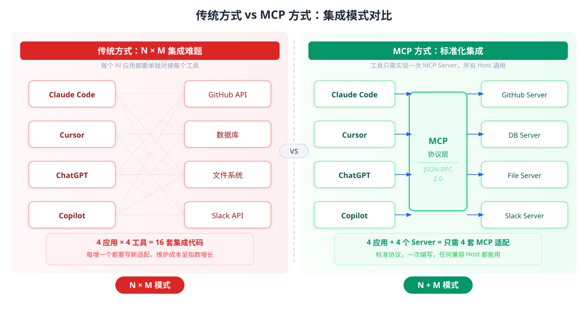
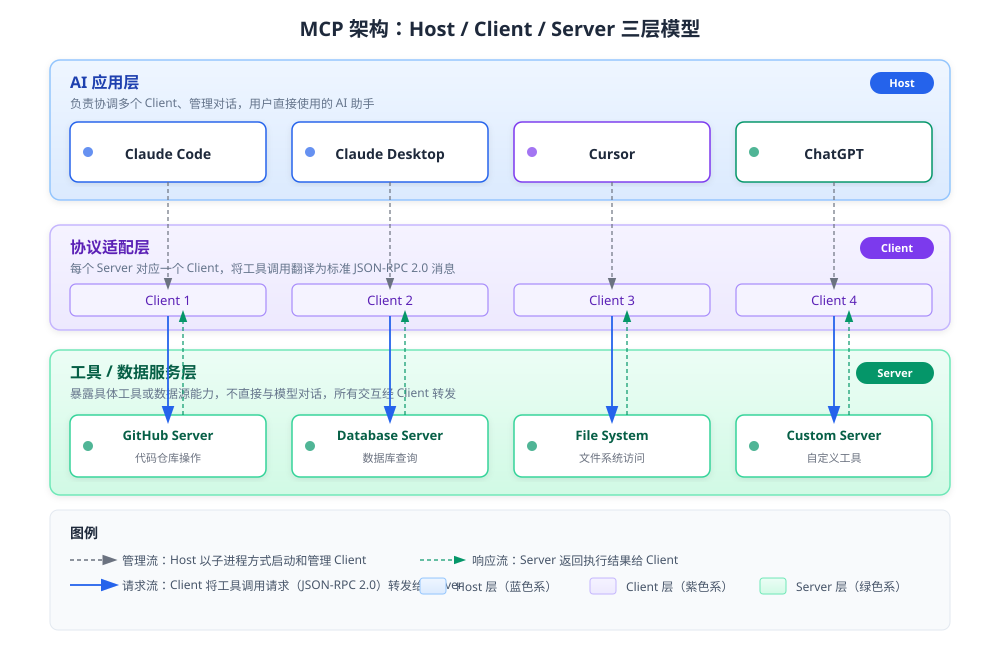
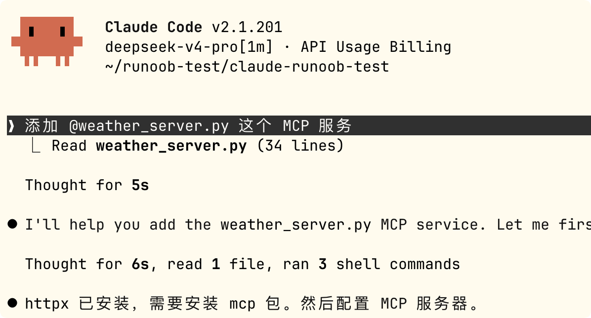
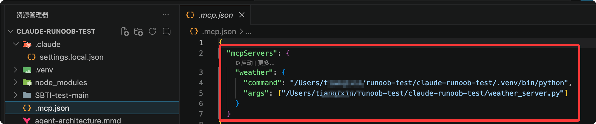
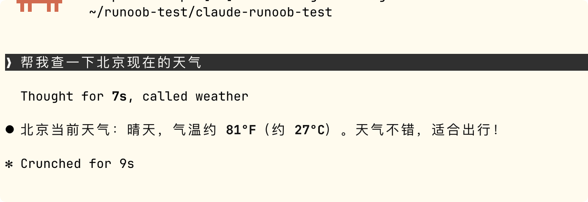

MCP 入门教程
MCP 英文全称 Model Context Protocol（模型上下文协议），是一个开放标准协议，用于标准化 AI 应用与外部工具、数据源之间的连接方式。
MCP 就像 USB-C 一样，可以让不同设备能够通过相同的接口连接在一起。

在 MCP 出现之前，每接入一个新工具（如 GitHub、Slack、数据库），每个 AI 应用都要单独写一套集成代码，形成 N × M 集成难题（N 个 AI 应用 × M 个工具 = N×M 套代码）。
有了 MCP 之后，工具方只需按标准做一个 MCP Server，任何支持 MCP 的 AI 应用都能直接使用，变成 1 套 Server + 兼容所有 Host。
下图直观展示了传统 N×M 集成与 MCP 标准化集成的区别：

MCP 已于 2025 年 12 月由 Anthropic 捐赠给 Linux Foundation 下的 Agentic AI Foundation（AAIF），成为行业共有的开放标准。OpenAI、Block 等厂商共同参与治理。
发展时间线
| 时间 | 里程碑 |
|---|---|
| 2023 年前 | OpenAI 推出 function calling、ChatGPT 插件框架，但均为厂商私有格式，绑定单一平台 |
| 2024 年 11 月 | Anthropic 发布 MCP，模型无关、厂商中立，任何模型都能用同一个 Server |
| 2025 年 3 月 | OpenAI 官方宣布支持 MCP |
| 2025 年中 | 新增 Streamable HTTP 传输、OAuth 2.1 授权、Elicitation（信息征询）等能力，MCP 走向生产级远程服务 |
| 2025 年 12 月 | 协议治理权移交 AAIF（Linux Foundation），进入多厂商共治阶段 |
| 2026 年 | 核心朝无状态化演进，新增 Tasks（长任务）、MCP Apps（交互式 UI）等扩展能力 |
核心架构：Host / Client / Server
MCP 借鉴了 LSP（Language Server Protocol，编辑器统一支持编程语言的协议）的设计思路，定义了三种角色：
| 角色 | 说明 | 例子 |
|---|---|---|
| Host（主机） | 用户直接使用的 AI 应用，负责协调多个 Client、管理对话 | Claude Code、Claude Desktop、Cursor、ChatGPT |
| Client（客户端） | Host 内部组件，与某一个 Server 保持一对一连接，负责将模型的工具调用请求翻译为标准协议消息 | Host 每连接一个 Server 就会创建一个 Client |
| Server（服务器） | 包一层标准协议，暴露某个具体工具或数据源的能力，不直接与大模型对话 | GitHub API Server、数据库 Server、文件系统 Server |
三层架构关系如下图所示：

底层通信统一使用 JSON-RPC 2.0 消息格式，保证了不同角色之间交互的标准化。
MCP 通信流程详解
以"用户让 AI 查天气"为例，一次完整的工具调用过程如下：

流程分为七个步骤：
- 用户提问：用户在 Host（如 Claude Code）中输入"帮我查一下北京天气"。
- 模型判断：Host 内置的大模型分析问题，判断需要调用天气查询工具，将调用意图发送给 Client。
- 协议翻译：Client 将工具调用请求转换为 JSON-RPC 2.0 格式消息，发送给对应的 Server。
- Server 执行：Server 收到请求后执行实际操作（如调用天气 API、查询数据库）。
- 返回结果：Server 将结果以 JSON-RPC 格式返回给 Client。
- 交回模型：Client 将结果传回 Host，供模型整合到回答中。
- 回答用户：模型将工具返回的数据与自然语言整合，输出最终回答。
在整个流程中，Server 完全不知道大模型的存在——它只处理 JSON-RPC 消息，这是 MCP 实现模型无关的关键设计。
三大核心原语
一个 MCP Server 可以对外暴露三类能力，称为"原语"（Primitive）：
| 原语 | 定义 | 典型场景 |
|---|---|---|
| Tools（工具） | 可执行的动作，模型可主动调用，会产生副作用（如写数据、发消息） | 发送邮件、创建工单、执行数据库查询、操作文件 |
| Resources（资源） | 只读数据，供模型读取上下文，不涉及执行 | 日志文件内容、数据库表快照、API 文档 |
| Prompts（提示词模板） | 预先写好的可复用提示词模板，用户或应用可以直接调用 | "帮我总结这份合同的关键条款"、"分析这段代码的性能问题" |
此外还有两个进阶机制：
- Sampling（采样）：Server 反过来可以请求 Host 的模型帮它生成内容，实现角色互换。
- Elicitation（信息征询）：Server 执行中途发现信息不足，可以主动向用户追问，例如"要按哪个日期筛选？"
刚开始可以先重点关注 Tools 和 Resources 即可，Prompts、Sampling、Elicitation 在后期使用时再了解也不迟。
传输方式
MCP 支持两种传输方式，适用于不同场景：
| 传输方式 | 适用场景 | 特点 |
|---|---|---|
| stdio（标准输入输出） | 本地工具，Host 以子进程方式启动 Server | 最简单，无需网络配置，适合个人电脑上的本地工具 |
| Streamable HTTP | 远程生产环境，Server 作为 HTTPS 服务部署 | 支持并发连接、水平扩展，搭配 OAuth 2.1 做身份验证 |
个人学习和本地开发使用 stdio 即可。
企业级、需要多人共享的场景则使用 Streamable HTTP。
本教程的演示案例均采用 stdio 方式。
安全须知
MCP 赋予了 AI 执行代码、访问真实系统的能力，因此安全规范尤为重要：
- 工具描述本身不可信：除非来自可信 Server，功能说明可能被恶意篡改（提示词注入风险），Host 应对工具描述保持警惕。
- 必须显式获得用户同意：不能静默执行敏感操作，每次工具调用都应经过用户确认。
- 生产环境加强防护：Server 应作为 OAuth 资源服务器部署，配合 TLS 加密、访问控制、日志审计。
- 第三方 Server 需审核：使用前确认来源可信，必要时做沙箱隔离。
实战演示：用 Claude Code 接入 MCP Server
下面通过两个完整案例，展示如何编写 MCP Server 并接入 Claude Code 使用。
第一个案例使用 Python 编写天气查询服务，第二个案例使用 Node.js/TypeScript 编写待办事项管理。
案例一：Python 天气查询 Server
目标：编写一个提供天气查询工具的 MCP Server，通过 Claude Code 调用。
环境准备
pip install mcp httpx
需要安装两个 Python 包：mcp 是 MCP 官方 Python SDK，httpx 用于发起 HTTP 请求调用天气 API。
编写 Server 代码
创建文件 weather_server.py：
实例
from mcp.server.fastmcp import FastMCP
import httpx
# 创建一个名为 "weather" 的 MCP Server 实例
# FastMCP 提供了高层次的 API，简化 Server 开发
mcp = FastMCP("weather")
@mcp.tool()
async def get_weather(city: str) -> str:
"""查询指定城市的当前天气。
Args:
city: 城市名称，支持中文或英文，例如 "Beijing" 或 "上海"
"""
# 使用 wttr.in 免费天气 API，无需注册 API Key
# format 参数指定返回格式：%C=天气状况, %t=温度
url = f"https://wttr.in/{city}?format=%C+%t"
async with httpx.AsyncClient() as client:
resp = await client.get(url, timeout=10)
resp.raise_for_status()
return f"{city} 当前天气：{resp.text.strip()}"
@mcp.resource("weather://cities/supported")
def supported_cities() -> str:
"""返回当前支持查询的城市列表（只读资源示例）。"""
return "Beijing, Shanghai, Guangzhou, Shenzhen, Hangzhou, Chengdu, runoob"
if __name__ == "__main__":
# 使用 stdio 传输，供 Claude Code 以子进程方式调用
mcp.run(transport="stdio")
代码说明：
- @mcp.tool()：将函数注册为 Tool，模型的 docstring 会自动作为工具说明提供给大模型，帮助模型判断何时该调用。
- @mcp.resource()：将函数注册为 Resource，供模型按需读取，不涉及"执行"，只是"查阅"。
- mcp.run(transport="stdio")：通过标准输入输出与 Host 通信，是本地工具最常用的方式。
本地调试（可选但推荐）
在接入 Claude Code 之前，先用 MCP 官方 Inspector 工具调试 Server，确认它正常工作：
npx @modelcontextprotocol/inspector python weather_server.py
运行后会自动打开一个网页调试界面，可以看到 Server 暴露了哪些 Tool 和 Resource，并手动调用测试。

建议每次都先走一遍 Inspector 调试流程，在接入真实的 AI 助手之前排查代码问题，能节省大量排查时间。
在 Claude Code 中配置 MCP Server
方式一：直接让 AI 添加
我们可以直接启动 Claude：
claude
输入以下信息，让 Claude 自己帮我配置添加：
添加 @weather_server.py 这个 MCP 服务

这种最简单，输入提示信息，配置依赖都能自动完成。

可以看到在当前目录的 .mcp.json 文件中自动生成了配置信息：

配置完成后，在 Claude Code 中直接提问：
帮我查一下北京现在的天气

如果喜欢自己折腾，也可以使用命令式添加和文件配置。
方式二：命令行添加
注意命令与文件的路径，要自己修改：
claude mcp add weather python /Users/runoob/runoob-test/weather_server.py
这条命令的含义：
- claude mcp add：Claude Code 的 MCP 管理子命令。
- weather：给这个 MCP Server 起一个名字，后续用 claude mcp list 可以看到。
- python：启动 Server 的命令。
- /Users/.../weather_server.py：Server 脚本的绝对路径。
添加成功后，可以用以下命令查看已连接的 MCP Server：
claude mcp list
输出示例：
NAME STATUS COMMAND weather active python /Users/runoob/runoob-test/weather_server.py
如需移除某个 Server：
$ claude mcp remove weather
方式三：配置文件（适合团队共享）
在项目根目录创建 .mcp.json 文件：
{
"mcpServers": {
"weather": {
"command": "python",
"args": ["/Users/runoob/runoob-test/weather_server.py"]
}
}
}
保存后重启 Claude Code（或重新打开项目），配置即生效。
配置文件方式的好处是可以提交到 Git 仓库，团队成员 clone 项目后自动获得相同的 MCP Server 配置。
如果配置了用户级别的 MCP Server（存储在 ~/.claude/mcp.json 中），则对所有项目生效。项目级别的 .mcp.json 仅对当前项目生效。
实际使用
配置完成后，在 Claude Code 中直接提问：
> 帮我查一下北京现在的天气
Claude Code 会自动：
- 识别出需要调用 weather Server 的 get_weather 工具。
- 弹出授权确认对话框，询问是否允许调用。
- 你点击同意后，调用 Server 获取天气数据。
- 将结果整合为自然语言回答。
这就是从模型到真实世界数据的完整闭环。
案例二：Node.js/TypeScript 待办事项 Server
如果你更熟悉 JavaScript/TypeScript 生态，以下是 Node.js 版本的 MCP Server 示例。
环境准备
npm install @modelcontextprotocol/sdk zod
编写 Server 代码
创建文件 todo_server.ts：
实例
import { McpServer } from "@modelcontextprotocol/sdk/server/mcp.js";
import { StdioServerTransport } from "@modelcontextprotocol/sdk/server/stdio.js";
import { z } from "zod";
// 创建 MCP Server 实例，设置名称和版本号
const server = new McpServer({
name: "todo-list",
version: "1.0.0"
});
// 用数组模拟待办事项存储（实际项目可替换为数据库）
const todos: string[] = [];
// 注册第一个 Tool：添加待办事项
server.tool(
"add_todo", // Tool 名称
"添加一条待办事项", // Tool 描述（模型据此判断何时调用）
{
// 参数 schema，使用 Zod 定义，自动生成 JSON Schema
item: z.string().describe("待办内容")
},
async ({ item }) => {
todos.push(item);
return {
content: [{
type: "text",
text: `已添加："${item}"，当前共 ${todos.length} 条待办`
}]
};
}
);
// 注册第二个 Tool：列出所有待办
server.tool(
"list_todos",
"列出所有待办事项",
{}, // 无参数
async () => {
const text = todos.length
? todos.map((t, i) => `${i + 1}. ${t}`).join("\n")
: "暂无待办事项";
return {
content: [{ type: "text", text }]
};
}
);
// 使用 stdio 传输启动 Server
const transport = new StdioServerTransport();
await server.connect(transport);
接入 Claude Code 的方式与 Python 版本完全一致。
我们可以直接启动 Claude：
claude
输入以下信息，让 Claude 自己帮我配置添加：
添加 @todo_server.ts 这个 MCP 服务
然后在对话中说 "帮我添加一条待办：购买 runoob 教程"，Claude Code 就会调用 add_todo 工具。
现有生态：不必什么都自己写
MCP 发布以来，社区已发布超过 500 个公开 Server，覆盖了绝大多数常见场景：
| 类别 | 现成 MCP Server 示例 |
|---|---|
| 代码托管 | GitHub、GitLab、Bitbucket |
| 即时通讯 | Slack、Discord |
| 云存储 | Google Drive、OneDrive |
| 数据库 | PostgreSQL、MySQL、SQLite、MongoDB |
| 网页自动化 | Puppeteer、Playwright |
| 知识管理 | Notion、Obsidian |
| 文件系统 | Filesystem（本地文件读写） |
官方 SDK 覆盖以下编程语言：TypeScript、Python、C#、Java、Swift。
实际开发中，大部分场景直接找现成 Server 使用即可。只有在连接公司内部系统或私有数据库时，才需要自己编写 MCP Server。
常见问题
| 问题 | 回答 |
|---|---|
| MCP 会取代 Function Calling 吗？ | 不会。Function Calling 是模型调用工具的底层机制，MCP 在这层机制外面包了一套标准化协议，让不同厂商的模型都使用同一套工具定义。两者是"标准化"而非"替代"的关系。 |
| 一个 Server 能同时给多个 AI 应用用吗？ | 可以，这正是 MCP 的核心价值——写一次 Server，任何兼容 MCP 的 Host（Claude Code、Claude Desktop、Cursor、ChatGPT 等）都能用。 |
| 使用 MCP 需要写代码吗？ | 如果只是使用别人做好的 MCP Server，完全不需要写代码——在 Claude Code 中用 claude mcp add 命令配置即可。只有开发自己的 Server 才需要写代码。 |
| stdio 和 Streamable HTTP 怎么选？ | 个人使用、本地工具选 stdio（零配置）；团队共享、生产部署选 Streamable HTTP（需配置 HTTPS 和 OAuth）。 |
参考资料
- 官方文档：https://modelcontextprotocol.io
- 官方规范：https://modelcontextprotocol.io/specification
- 官方 GitHub（含各语言 SDK 与参考实现）：https://github.com/modelcontextprotocol
- MCP 协议：https://www.runoob.com/np/mcp-protocol.html
- 调试工具 Inspector：npx @modelcontextprotocol/inspector

点我分享笔记